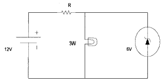

건설기계정비기능장 (2002-04-07 기출문제)
1과목: 임의 구분
1. 크랭크축의 밸런스 웨이트를 설치하는데 관계되는 것은?
- 기관 회전수
- 실린더 수
- 행정
- 피스톤의 크기
(정답률: 80%)

2. 실린더의 압축압력이 감소되는 원인에 해당되지 않는 것은?
- 피스톤링의 절개부가 일직선상에 있지 않을 때
- 실린더벽에 마멸과 흠이 생겼을 때
- 피스톤링의 마멸 또는 탄력이 부족할 때
- 피스톤이 마멸되었거나 상부에 금이 갔을 때
(정답률: 80%)
3. 연료 공급펌프(feed pump)의 시험 항목이 아닌 것은?
- 압축압력 시험
- 기밀 시험
- 송출량 시험
- 흡방능력 시험
(정답률: 73%)
4. 행정체적이 240cc이고 압축비가 9일때 연소실 체적은 몇 cc인가?
- 20cc
- 30cc
- 40cc
- 65cc
(정답률: 75%)
5. 압축비 8, 피스톤 행정 100mm인 4행정 1사이클 기관에서 연소실 체적이 70cm3일 때 실린더의 내경(mm)은?
- 62
- 79
- 87
- 91
(정답률: 알수없음)
6. 전자제어 연료분사장치의 연료분사량 증감은 어떻게 조절 하는가?
- 노즐의 개방시간을 조절하여 실시한다.
- 딜리버리 밸브의 스프링 장력을 조절하여 실시한다.
- 거버너의 진공도로 조절하여 실시한다.
- 타이머의 속도에 따라 조절된다.
(정답률: 60%)
7. 디젤기관이 노크가 발생하였다. 노크를 방지하는 사항 중 잘못된 것은?
- 연료의 발화점을 낮춘다.
- 연료의 착화지연을 짧게 한다.
- 회전속도를 빨리 한다.
- 실린더 체적을 크게 한다.
(정답률: 72%)
8. 가솔린기관과 디젤기관의 근본적인 차이는?
- 엔진의 마력
- 연소의 점화과정
- 엔진의 강도
- 악세사리 부품의 위치
(정답률: 86%)
9. 디젤기관에서 연료의 착화성을 좋게 하기 위하여 착화촉진제로 쓰이는 것은?
- 4에틸납
- α -메틸 나프탈린
- 옥탄
- 아초산 아밀
(정답률: 알수없음)
10. 제동 열효율 38%인 디젤기관에서 저위 발열량 10,100kcal/kg 인 경유를 사용할 때 연료소비율은 몇 g/(PS.h) 인가?
- 155
- 165
- 176
- 186
(정답률: 알수없음)
11. 다음 중 고속 디젤기관의 기본 사이클에 해당하는 것은?
- 디젤 사이클
- 정적, 정압 사이클
- 정압 사이클
- 정적 사이클
(정답률: 77%)
12. 엔진내부의 마모상태를 점검하기 위해 엔진오일을 정기적으로 채취하여 검사하는 적당한 시기는?
- 최소 매 250시간
- 매년 정기적으로 1회
- 엔진오일 교환시
- 엔진오일을 3회 교환시
(정답률: 75%)
13. 공기온도센서(ATS)의 설명이 틀린 것은?
- 기관으로 흡입되는 공기의 온도에 대응하는 전압을 ECU로 보내준다.
- 연료분사 비율의 보정으로 사용되는 입력신호의 기본이 된다.
- 유입되는 공기의 온도가 증가시 ATS의 저항을 증가하는 특성을 보인다.
- ECU를 통해서 전류를 공급받으면 서미스터를 통해서 전류가 흐른다.
(정답률: 알수없음)
14. 다음 분사노즐의 고장원인이 아닌 것은?
- 이상과열
- 연료속의 불순물
- 부적당한 조립
- 분사시기 부적당
(정답률: 60%)
15. 도수분포표에서 도수가 최대인 곳의 대표치를 말하는 것은?
- 중위수
- 비 대칭도
- 모우드(mode)
- 첨도
(정답률: 70%)
16. 일정통제를 할 때 1일당 그 작업을 단축하는데 소요되는 비용의 증가를 의미하는 것은?
- 비용구배(Cost slope)
- 정상 소요시간(Normal duration)
- 비용견적(Cost estimation)
- 총비용(Total cost)
(정답률: 알수없음)
17. 서블릭(therblig)기호는 어떤 분석에 주로 이용되는가?
- 연합작업분석
- 공정분석
- 동작분석
- 작업분석
(정답률: 24%)
18. 관리도에서 점이 관리한계내에 있고 중심선 한쪽에 연속해서 나타나는 점을 무엇이라 하는가?
- 경향
- 주기
- 런
- 산포
(정답률: 알수없음)
19. 모집단의 참값과 측정 데이터의 차를 무엇이라 하는가?
- 오차
- 신뢰성
- 정밀도
- 정확도
(정답률: 67%)
20. 준비작업시간이 5분, 정미작업시간이 20분, lot수 5, 주작업에 대한 여유율이 0.2라면 가공시간은?
- 150분
- 145분
- 125분
- 1⑤분
(정답률: 알수없음)
2과목: 임의 구분
21. 공기식 브레이크에서 제동력을 증감하기 위해 브레이크 챔버에 보내는 공기량을 조정하는 밸브는?
- 퀵릴리스 밸브
- 언로더 밸브
- 브레이크 밸브
- 릴레이 밸브
(정답률: 알수없음)
22. 휠 구동식 건설기계에서 클러치의 용량을 결정하는 요소가 아닌 것은?
- 마찰계수
- 스프링의 세기
- 클러치판의 직경
- 클러치의 자유간극
(정답률: 50%)
23. 휠 구동식 건설기계의 클러치 작용시 회전충격을 흡수하여 클러치 판을 보호하는 스프링은 ?
- 쿠션 스프링
- 댐퍼 스프링
- 앵귤러 스프링
- 릴리프 스프링
(정답률: 73%)
24. 다음 중 독립현가 장치의 종류가 아닌 것은?
- 위시본 형(wish-bone type)
- 맥퍼슨 형(mac-pherson type)
- 마아몬 형(marmon type)
- 트레일링 암 형(trailing arm type)
(정답률: 75%)
25. 동기 물림식 변속기에서 싱크로나이저 링 안쪽 면에 홈이 파져 있다. 이 홈의 역할이 아닌 것은?
- 접속시 마찰작용이 잘 되도록 한다.
- 콘(cone)클러치 작용을 원활하게 한다.
- 싱크로나이저 키가 빠지는 것을 방지한다.
- 접속시 유막을 신속히 차단한다.
(정답률: 60%)
26. 휠 구동형 건설기계에서 조향할 때만 차동장치에서 소음이 발생한다. 그 원인과 관계가 있는 것은?
- 구동 피니언의 프리로드가 크다.
- 구동 피니언의 축방향 유격이 크다.
- 사이드 베어링의 마모가 심하다.
- 차동 피니언의 트러스트 와셔가 너무 얇다.
(정답률: 알수없음)
27. 동력전달 장치 중 차동장치는 어떤 경우에 작동하는가?
- 직선 전진시
- 방향 전환시
- 직선 후진시
- 종감속 기어 고장시
(정답률: 알수없음)
28. 기중기에서 와이어 케이블의 규격이 1/3" X 6 X 21 이다. 6의 숫자는 무엇을 가리키는가?
- 케이블 직경
- 케이블 선수
- 케이블 가닥수
- 케이블 강도
(정답률: 100%)
29. 콘크리트 펌프 차량의 축거가 3m이고, 바깥쪽 바퀴의 조향각이 30° , 안쪽 바퀴의 조향각이 35° 이다. 이 차량의 최소 회전반경은? (단, 바퀴의 접지면 중심과 킹핀과의 거리는 20cm이다.)
- 5.2[m]
- 5.4[m]
- 6.0[m]
- 6.2[m]
(정답률: 30%)
30. 유압식 굴삭기에 사용되는 회전이음(Swivel Joint)의 작용은?
- 엔진에 연결되어 상부 회전체에 동력을 전달한다.
- 상부 회전체와 하부를 기계적으로 연결한다.
- 상부 회전체가 어떤 방향에서 작업을 하여도 유압유를 공급한다.
- 상부 회전체의 중심 역할을 한다.
(정답률: 알수없음)
31. 유압식 작업장치를 가진 로더에서 버킷레버를 중립위치에서 틸트위치로 움직일 때 순간적으로 덤프되는 원인은?
- 유압펌프의 토출유량이 작기 때문에
- 메인 릴리프밸브의 압력제어가 불량하기 때문에
- 방향제어밸브의 덤프 스풀, 첵밸브 시트 결함
- 유량제어밸브의 교축 불량으로 유량 유입량 감소
(정답률: 67%)
32. 유압브레이커에 사용하는 어큐뮬레이터의 정비에 관계가 없는 사항은?
- 어큐뮬레이터 커버에서 차징밸브 분리
- 어큐뮬레이터 몸체에서 백업링과 O링 분리
- 어큐뮬레이터 커버를 분리하고 실린더와 피스톤을 분리
- 어큐뮬레이터에서 다이어프램을 분리
(정답률: 알수없음)
33. 비자항식(非自航式) 준설선의 규격을 바르게 표시하지 못한 것은?
- 디퍼식은 버킷의 용량(m3)
- 그래브식은 그래브 버킷의 산적 용량(m3)
- 버킷식은 주기관의 연속 정격 출력(ps)
- 펌프식은 준설 펌프 구동용 주기관의 정격 출력(ps)
(정답률: 60%)
34. 트랙의 장력을 측정하는 일반적인 방법이 아닌 것은?
- No.1 캐리어롤러의 끝에 납작한 쇠봉을 넣고 트랙을 들었을 때 캐리어롤러와 링크 밑과의 간극을 측정
- 트랙슈와 슈의 돌기거리를 측정
- 프론트 아이들러와 No.1 캐리어롤러 사이에 곧은자를 대고 트랙의 처짐을 측정
- 트랙의 한쪽을 들어 트랙의 처짐을 측정
(정답률: 40%)
35. 습식 불도저의 브레이크 장치는 무슨식을 주로 사용하는가?
- 토글식 브레이크 또는 앵커식 브레이크
- 내부 확장식 브레이크 또는 앵커식 브레이크
- 디스크 브레이크 또는 앵커식 브레이크
- 하이드로 백 또는 앵커식 브레이크
(정답률: 65%)
36. 다음 그레이더에 대한 설명 중 틀린 것은?
- 앞바퀴 경사장치는 회전 반경을 작게 하기 위해 설치되어있다.
- 리이닝 장치의 앞바퀴를 경사 시킬 수 있는 각도는 20∼30° 이다.
- 견인력과 자기 세척 작용을 위해 앞바퀴 타이어 트레드 형태 방향을 같게 설치한다.
- 스티어링 비틀림 각도는 6∼7° 이다.
(정답률: 알수없음)
37. 다음 트랙롤러에 대한 설명 중 틀린 것은?
- 트랙롤러를 캐리어롤러 라고도 한다.
- 2중 플랜지형은 트랙의 정렬을 바르게 한다.
- 싱글 플랜지형은 트랙이 외부로 벗어나는 것을 방지한다.
- 5개의 트랙롤러가 있는 경우, 2번과 4번은 2중 플랜지형 롤러를 사용한다.
(정답률: 60%)
38. 트렉터의 무한궤도식 동력전달장치 계통에서 사용되는 부품과 거리가 먼 것은?
- 조향클러치
- 토크 변환기
- 아이들러
- 종감속 장치
(정답률: 82%)
39. 직권전동기에 가해지는 전압이 11V, 전류가 50A일때 회전수가 5000rpm이었다. 가해지는 전압이 7V 되고 부하전류가 같다면 회전수는 몇 rpm이 되는가? (단, 전기자와 계자회로 저항의 합은 0.02Ω )
- 2500
- 3000
- 3500
- 4000
(정답률: 알수없음)
40. 전해액이 30℃에서 비중이 1.215일 때 표준온도(20℃) 에서의 비중은 얼마인가?
- 1.208
- 1.222
- 1.227
- 1.260
(정답률: 60%)
3과목: 임의 구분
41. 축전지를 경부하 시험한 결과 각셀의 전압이 1.95V이고 각셀의 전압차가 0.⑤V 이상이면?
- 충전하여 계속 사용한다.
- 축전지를 교환한다.
- 전해액의 비중을 조정한다.
- 과충전하여 각셀의 전압이 같도록 한다.
(정답률: 67%)
42. 전기자 코일의 단선시험에서 잘못된 것은?
- 전기자시험기의 전자석 위에 전기자를 올려 놓는다.
- 시험프롯(Testprod)을 사용하여 정류자편 사이의 단선을 점검한다.
- 전압계에 전압이 나타나지 않으면 단선되었음을 뜻한다.
- 전기자시험기의 파일럿 램프가 점등되면 단선된 것이다.
(정답률: 70%)
43. 다음에서 시동을 쉽게 해주는 보조장치가 아닌 것은?
- 감압장치
- 예열장치
- 연소촉진제 공급장치
- 과급장치
(정답률: 알수없음)
44. AC 발전기와 축전기가 접속된 상태로 급속충전을 할때 손상되는 것은?
- 브러시
- 축전지 극판
- 스테이터 코일
- 다이오드
(정답률: 알수없음)
45. 기동전동기의 회전이 느린 원인이 될 수 없는 것은?
- 축전지의 불량으로 전압이 낮을때
- 축전지의 접속이 불량할때
- 정류자의 상태가 불량할때
- 피니언 기어의 물림이 불량할때
(정답률: 알수없음)
46. 시동모터가 양호할 때 피니언 기어가 플라이휠 링기어를 회전시키지 못하는 경우와 거리가 먼 것은?
- 배터리 어스선의 접지가 불량일 경우이다.
- 플라이휠 링기어가 과다 마모되었다.
- 배터리 본선이 규격보다 조금 굵다.
- 배터리의 전해액이 부족하다.
(정답률: 알수없음)
47. 다음 회로에서 3W전구가 가장 밝게 점등되는 조건으로 옳은 것은?

- 저항 R이 6Ω 일 때 가장 밝다.
- 저항 R이 12Ω 일 때 가장 밝다.
- 저항 R이 18Ω 일 때 가장 밝다.
- 저항 R이 24Ω 일 때 가장 밝다.
(정답률: 80%)
48. 양수량 0.25m3/s, 압력 30kgf/cm2, 평균 유속 2.5m/s 일 때 배출시키는 펌프의 배출관 지름은 약 몇 mm로 해야 하는가?
- 287
- 327
- 357
- 387
(정답률: 46%)
49. 단면적 5cm2의 피스톤에 10kgf 의 힘을 주어 연결된 피스톤에서 58kgf 의 힘을 얻으려면 피스톤의 지름(cm)은?
- 3.25
- 4.21
- 4.42
- 6.08
(정답률: 25%)
50. 유압오일 탱크내에 가압 압력이 없을 경우 어떠한 현상이 생길 수 있는가?
- 유압펌프에 진공이 발생한다.
- 유압오일이 탱크로의 리턴이 불량해진다.
- 유압오일이 과열된다.
- 유압오일이 과냉각된다.
(정답률: 알수없음)
51. 기체압축형 축압기의 기체로서 공기의 사용을 금하는 이유가 아닌 것은?
- 공기 속 수분에 의한 구성품의 부식때문이다.
- 수분 응축으로 인한 시일의 손상 때문이다.
- 공기 누설로 인한 오일의 산화 때문이다.
- 공기 주입이 어렵기 때문이다.
(정답률: 80%)
52. 유압 펌프에서의 고장 사항이 아닌 것은?
- 펌프 축 실(Seal)에서 오일 누설
- 오일의 흐름량 부족
- 소음 및 잡음의 증대
- 오일압력의 과다
(정답률: 알수없음)
53. 굴삭기의 차체를 용접 수리할 때 접지를 시켜서는 안되는 것은?
- 유압모터의 외부 몸체
- 유압실린더의 로드
- 차체
- 유압펌프의 외부 몸체
(정답률: 알수없음)
54. 안전한 정비를 하기 위해 사전에 준비해야 할 사항이 아닌 것은?
- 정비작업 전 장비가 이동하지 않도록 고정한다.
- 작업전 축전지의 +, -단자를 항상 부착시켜 놓는다.
- 버킷을 지면에 대하여 평탄하게 낮춘다.
- 작업전 장비가 선회할 수 없도록 키를 빼어 놓는다.
(정답률: 알수없음)
55. 핸드그라인더를 사용할 때 해당되지 않는 것은?
- 매번 사용하기 전에 정기적으로 점검한다.
- 가연성 가스가 있는 곳에서 사용하지 않는다.
- 그라인딩 불꽃이 작업장으로 접근하지 못하도록 칸막이를 한다.
- 리벳팅 작업과 같이 한다.
(정답률: 90%)
56. 건설기계를 정비작업할 때 안전하지 못한 작업복 상태는?
- 작업할 때에는 시계와 반지는 착용하지 않는다.
- 연료취급, 세척오일이나 브레이크 오일 취급시 만일에 대비하여 보안경을 착용한다.
- 작업복은 자기의 몸보다 좀더 큰 것을 착용한다.
- 먼지가 많은 작업시는 마스크를 착용한다.
(정답률: 73%)
57. 축압기의 작용이 아닌 것은?
- 유체 에너지의 축적
- 충격파의 흡수
- 펌프의 압력 진동의 흡수
- 서어지 압력의 증가
(정답률: 알수없음)
58. 다음 중 전동효율과 토크 효율이 가장 높은 유압 전동기는?
- 액시얼 플런저형
- 기어형
- 멀티스트로우크형
- 레이디얼플런저형
(정답률: 75%)
59. 유압 모터 회로에 속하지 않는 것은?
- 힘의 증대회로
- 일정 출력회로
- 일정 토크회로
- 제동 회로
(정답률: 알수없음)
60. 다음 중 베인 모터의 장점이 아닌 것은?
- 무단 변속이 가능하다.
- 구조가 기어 모터보다 복잡하다.
- 출력 토크가 일정하다.
- 역전이 가능하다.
(정답률: 알수없음)